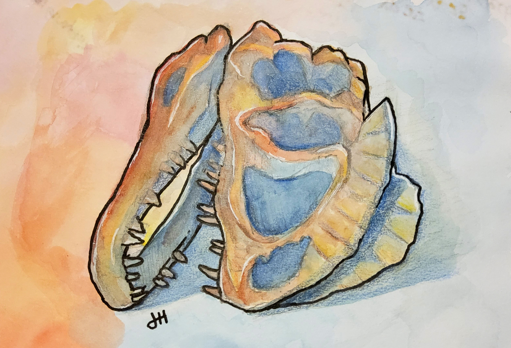

What Do I Make?
Here are some specific categories of what I can make and what they mean:
- Traditional Illustrations
- This refers to any form of art made physically, such as with pens, paint, and paper. With traditional artwork, my goal is to mail or ship the art to you for a personable piece to place whereever you desire. Prices will range from $15 to $50 depending upon materials and complexity. Shipping cost will be applied.
- 
- Digital Illustrations and Paintings
- This is a newer type of art where the use of computer software is used to create artwork. In such instances, you yourself may bring this image to the real world or simply keep the image digitally. Prices can range from $15 to $50 depending upon complexity. No materials or shipping costs will be applied.

- Vector Graphics
- This option is most efficient for those wanting to make or revamp a small company or organization for advertising purposes. I create my vector graphics through Adobe Illustrator, allowing for the highest quality image at any size necessary. Logos, banners, pamphlets, and more can be created through such graphics. Prices will range from $5 to $25 depending upon complexity. This can be combined with a digital illustration or painting, potentially adding further cost. No materials or shipping costs will be applied.

Terms of Service
- I will not accept alternative forms of payment besides US dollars.
- The time it will take for the piece to be finished is dependent upon the piece and how busy I am. I will provide an ETA as I go along, but expect it to flucuate.
- The final price is dependent upon the subject being drawn, the type of piece, the materials used, and whether or not shipping is necessary. The price ranges above are NOT FINAL and can be above or below those ranges.
- Refunds are entirely unavailable. You may request that a work be cancelled, however.
- I will provide work-in-progress images to ensure it is what you want. Don't be afraid to let me know if anything is off or if there is something that you want changed.
- Feel free to ask me any questions you have via phone or email.
Quote Form